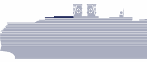
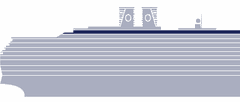
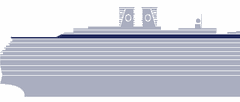
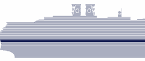
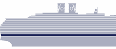

Vista-class cabin numbering: odd = starboard, even = port. All three group cabins — K5155 (Sandra & Becca), K5161 (Jett & Laura) and K5165 (Karen) — are starboard, in the central interior column, mid-aft, stacked three doors apart. The chart shows port-side elevation, so port/starboard isn't visible here, but forward/midship/aft positions are accurate. The chart highlights the cross-section function-by-function — coloured zones show public venues (theatre, atrium, pools, dining, casino, spa) while neutral bands are cabin areas. Tap any zone, icon, or deck label to jump to that deck's floor plan.
HAL accessible routes
The Retreat
Sport Court
Holland America's plan for the Zuiderdam. Fore at top, aft at bottom.

Deck 11Sports Deck
Top of the ship. Sun, courts, and an adults-only retreat.
Notable on this deck
🌅The Retreat ⚠ — Adults-only sundeck · 14 private cabanas (port + starboard) · cabanas 9 AM – 5 PM · HAL flagged renovation work for the Jun 2026 sailing window; cabana availability unconfirmed — call Ship Services to verify.
🏀Sport Court — Combined basketball + pickleball court at the aft end of Deck 11 · PPA partnership added 2023, free beginner lessons.
🏀Basketball Court — Programmatic use of the Sport Court for basketball (Around-the-World, Knockout, free play) · open with lights on a timer.
🏓Pickleball Court — Programmatic use of the Sport Court for pickleball · added 2023 in partnership with the PPA · daily Open Play blocks.
Crow's Nest
CN Café
Game Room
Art Studio
Shore Exc.
Kids Club
Holland America's plan for the Zuiderdam. Fore at top, aft at bottom.

Deck 10Observation Deck
Panoramic forward lounge, café, library, and kids/teens spaces.
Notable on this deck
🌌Crow's Nest — Forward observation lounge · 270 seats · own bar · DJ at night · new bandstand stage installed Dec 2025.
☕Crow's Nest Café — Patisserie + specialty coffee bar inside the observation lounge (the venue formerly called Explorations Central · 100 seats).
🌐Online Centre — Wi-Fi help desk and a small bank of computer stations adjoining the Crow's Nest Café / Library cluster.
🎮Game Room — Tables, cards, board games & trivia space (the Vista-class equivalent of The Loft for older guests).
🎨Art Studio — Hands-on art classes & craft workshops (BYOB on some sailings).
🎟Shore Excursions desk (Deck 10 satellite) — Counter inside the observation level for advisor consultations away from the busy main Atrium desk.
🧒Club HAL / Kids Club — Supervised programme ages 3–12 · two age-banded rooms · arts, crafts, video games, structured activity blocks.
🎮The Loft — Teen-only lounge ages 13–17 · physically separate from Club HAL · video games, PlayStations, ping-pong, music, social hangout.
Fitness
Spa & Salon
Hydropool
Lido Pool
Lido Bar
Dive-In
Canaletto
Lido Market
NY Pizza
Sea View Bar
Sea View Pool
Holland America's plan for the Zuiderdam. Fore at top, aft at bottom.

Deck 9Lido Deck
The busiest deck — pools, buffet, every casual food venue, the spa.
Notable on this deck
🏊Lido Pool — Main pool with retractable glass roof · 4 hot tubs.
🛍Atrium Shops — Umbrella retail strip on the Deck 3 atrium ring · houses Merabella, Effy, the Boutique, and rotating brand pop-ups · redesigned counters Dec 2025.
👜Boutique — Duty-free fashion, accessories, sundries & logo wear inside the Atrium Shops strip · rotating brand events (Shinola, Joseph Ribkoff, Cariloha, etc.).
📸Photo Gallery — View & purchase prints from the ship's photographers (separate Portrait Studio is on Deck 2).
🏛Half Moon Room — Bookable seminar / meeting room (Dutch-naming theme · used for religious services and small group sessions).
🏛Hudson Room — Bookable seminar / meeting room · heaviest used venue in this cluster (spa & wellness selling-seminars stack here).
🏛Stuyvesant Room — Bookable seminar / meeting room · used as overflow + special-interest groups.
💻Digital Workshop — Hands-on photo / video / smartphone classes (the venue formerly branded "Microsoft Studio" on Vista-class ships).
🍹Ocean Bar — Live music, dance floor · 147 seats.
🚶Promenade walking track — Wrap-around outdoor deck · ~4 laps per mile.
🍽The Dining Room (upper) — Aft · open seating breakfast & lunch, evening service · new carpeting Dec 2025.
World Stage
Casino
Billboard
Gallery Bar
Rolling Stone
Pinnacle Grill
Pinnacle Bar
Shops
Explorer's
Lincoln Ctr
Portraits
Dining Room
Holland America's plan for the Zuiderdam. Fore at top, aft at bottom.

Deck 2Lower Promenade Deck
World Stage orchestra, specialty dining, casino, the Music Walk.
Notable on this deck
🎭World Stage — Orchestra level (middle tier of the 3-deck theatre · stage on Deck 1, balcony on Deck 3).
🎰Casino — Slots, tables · 199 seats · closed in US ports.
🍸Gallery Bar — Casino's anchor cocktail bar; opens onto the gaming floor.
🎸Rolling Stone Lounge — Live rock-and-roll lounge, the big round venue mid-ship (replaced B.B. King's in the fleet-wide Music Walk refresh) · 170 seats.
🥃Explorer's Lounge — Quiet pre-dinner cocktail lounge with chamber-music service · doubles as Lincoln Center Stage venue.
🎻Lincoln Center Stage — Live classical chamber music inside Explorer's Lounge · 63 seats.
📸Portrait Studio — Onboard portrait sittings & daily-photo retail.
🖼Art Gallery — Rotating curated exhibitions on the Deck 2 atrium ring.
🔨Art Auctions — Scheduled auction days inside the Art Gallery · onboard art programme & collector preview events.
🍽The Dining Room (lower) — Aft · 1,058 seats · open seating or fixed time · breakfast, lunch, most dinners.
World Stage
Atrium
Guest Services
Future Cruises
Shore Excursions
Holland America's plan for the Zuiderdam. Fore at top, aft at bottom.

Deck 1Main Deck — Atrium
Three-deck atrium with the Waterford crystal seahorse sculpture. Also the stage / backstage level of the World Stage main theatre.
Notable on this deck
🎭World Stage — Stage / backstage level (lowest tier of the 3-deck theatre · orchestra is one flight up on Deck 2, balcony on Deck 3).
🌟Atrium — 3-deck-high lobby with the seahorse · live music · fresh paint + new carpet Dec 2025.
🛎Front Office / Guest Services — Reception, billing, lost & found · staffed 24h.
📅Future Cruises Desk — On-board sales for your next HAL booking (Mariner credits + early-booking incentives).
🎟Shore Excursions Desk — Book, modify or cancel tours; pick up tickets.
Top-down schematic of each deck. The hull outline is to scale fore-to-aft; venue boxes are approximate but positioned where they actually sit on board. Deck 5 is highlighted as the group's deck. All three cabins — K5155 (Sandra & Becca), K5161 (Jett & Laura), K5165 (Karen) — are pinned along the central column, starboard side, mid-aft.
The Ship — ms Zuiderdam
Vista Class
The Zuiderdam is the lead ship of Holland America's Vista class — a mid-size, classically elegant vessel that completed a comprehensive dry-dock refresh in December 2025.
Class / Entered Service
Vista Class • 2002
Guests
~1,964 (double occ.)
Crew
~840
Passenger Decks
11
The Navigator app is the on-board hub — daily schedule, dining reservations, deck plans,
excursion management and messaging between staterooms. Download it before you sail and the group can stay in sync.
Pinch or scroll to explore the deck plan. Esc closes.
📱↻
Rotate to landscape
The Zuiderdam's cross-section view is built for landscape. Turn your device sideways and we'll snap to it at the top of the page.